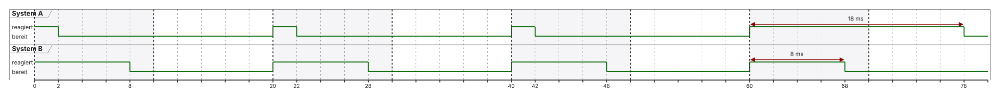
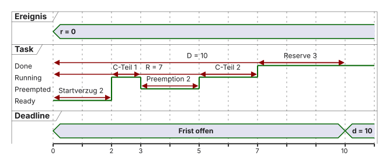
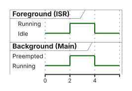
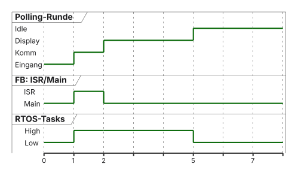
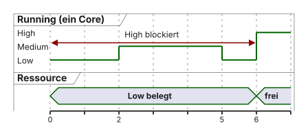
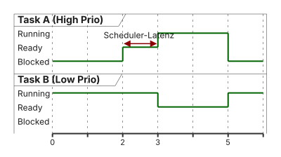

%%{init: {'theme': 'base', 'themeVariables': {'background': '#FFFFFF', 'primaryColor': '#FFFFFF', 'primaryBorderColor': '#E5E5EA', 'primaryTextColor': '#1D1D1F', 'lineColor': '#86868B', 'secondaryColor': '#F5F5F7', 'tertiaryColor': '#FFFFFF', 'mainBkg': '#FFFFFF', 'nodeBorder': '#E5E5EA', 'clusterBkg': '#F5F5F7', 'clusterBorder': '#E5E5EA', 'titleColor': '#1D1D1F', 'edgeLabelBackground': '#FFFFFF'}}}%%
flowchart LR
A[Beobachtete Zeiten] --> B[Messmaximum 80 us]
B --> C[Sichere Obergrenze 120 us]
C --> D[WCET-Schranke im Entwurf]
style B fill:#F5F5F7,stroke:#86868B,stroke-width:1px !important
style C fill:#FFFFFF,stroke:#E2001A,stroke-width:2px !important
01 · Was ist Echtzeit
Einführung und Paradigmenwechsel · EZS · DHBW Stuttgart
Prof. Dr.-Ing. Daniel Klünder
Willkommen zur Vorlesung Echtzeitsysteme!
- Neun Termine: je 4 Stunden Theorie und Praxis / Übungen
- Klausur am Ende des Semesters
- Fokus: moderne Multicore-Architekturen in der Industrie
- Hardware: STM32H755 (Dual-Core Cortex-M7/M4)
Lehrkonfiguration der Reihe
Gilt für VL1–VL9, sofern eine Folie nicht ausdrücklich abweicht. Kein Firmwareprojekt im Repository. Messungen bleiben ausstehend.
| Größe | Wert | Art |
|---|---|---|
| Board / MCU | NUCLEO-H755ZI-Q, STM32H755ZIT6 | A, UM2408 / DS12919 |
| LED / Taster | LD2 = PE1, User-Button PC13 | A, UM2408 |
| Kerne, ab VL3 | M7 Bare-Metal, M4 mit FreeRTOS über CMSIS-RTOS2 | B |
| VL1-Labor | M4 zunächst ohne Betriebssystem, nur HAL-Zeitbasis | B |
| CPU-Takte | M7 400 MHz, M4 200 MHz, unter den Maxima 480/240 | B, Maxima A |
| späterer RTOS-Tick | 1 kHz; in VL1 noch nicht aktiv | B |
| UART | 115200 Baud, 8N1 | B |
| SRAM4 | 0x38000000, 64 KiB, non-cacheable für M7 |
A Adresse, B Attribut |
| HSEM | 0 Boot, 1 Nutzdaten; ProcessID M7 0x37, M4 0x34 |
B |
| WWDG2 | APB1 = 100 MHz, Prescaler 8 | B, APB-Maximum je VOS bis 120 MHz ist A |
A ist dokumentierte Hardware. B ist eine didaktische Annahme, keine Messung. C wäre ein Messwert; den gibt es in dieser Reihe nicht.
Agenda für heute
- Organisatorisches und Spielregeln
- Motivation und Definition von Echtzeit
- Bare-Metal: Polling, Interrupts, Foreground/Background
- Deep Dive: Cortex-M, NVIC und Tail-Chaining
- Hardware STM32H755 und Toolchain
- Laborübung am Board
Organisatorisches
- Prüfungsleistung: Klausur am Ende des Semesters (Modul Rechnersysteme)
- Materialien: Folien, Handouts, Übungen und Musterlösungen auf der Kurswebsite und in Moodle
- Labor-Hardware: Boards werden gestellt (STM32H755)
- Tools: empfohlene Lehrumgebung CubeIDE 2.x mit separatem CubeMX; CubeIDE 1.x integriert die Konfiguration
Literatur und Quellen
- Hermann Kopetz: Real-Time Systems (Design Principles)
- Giorgio C. Buttazzo: Hard Real-Time Computing Systems (Scheduling)
- STMicroelectronics: Reference Manual STM32H745/755 (RM0399)
- FreeRTOS Documentation (online)
- Tipp: Datenblätter und Reference Manuals sind Ihre wichtigste Alltagsquelle
Einstieg: Diskussion
- Stellen Sie sich vor: Ihr ABS reagiert erst \(200\,\mathrm{ms}\) später — ist das noch „richtig“ oder schon „falsch“? (Diskussionsannahme: \(200\,\mathrm{ms}\) ist keine reale ABS-Spezifikation.)
Motivation: Warum Echtzeit?
- Steigende Komplexität in Embedded Systems
- Autonomes Fahren, Medizintechnik, Industrie 4.0 (Beispiele, keine pauschale Klassenzuordnung)
- Desktop-OS (Windows/Linux) liefern typischerweise keine harten Fristgarantien
- Timing-Fehler können sicherheitsrelevant sein — aber nicht jede Fristverletzung ist „katastrophal“
- Ziel: vorhersagbare Reaktionen innerhalb spezifizierter Fristen
Der große Mythos der Echtzeit
Was viele denken:
- „Echtzeit = extrem schnell“
- „4 GHz ist echtzeitfähiger als 400 MHz“
- „Echtzeit = flüssiges Video“
Was es wirklich ist:
- Echtzeit = Rechtzeitigkeit (Fristvertrag)
- Ein 400-MHz-Controller mit Garantie kann echtzeitfähig sein
- Ein 4-GHz-PC ohne Garantie ist es oft nicht
Mythos: Mittelwert ≠ harte Garantie

- Illustrative Einzelbeobachtungen, graue Fenster = Deadline \(D = 10\,\mathrm{ms}\)
- A: \(2 / 2 / 2 / 18\,\mathrm{ms}\) (Mittel \(6\,\mathrm{ms}\)), B: \(8 / 8 / 8 / 8\,\mathrm{ms}\) (Mittel \(8\,\mathrm{ms}\))
- A ist im Mittel schneller als B — und verletzt trotzdem die Frist
- Vier Messungen bei B sind kein allgemeiner Nachweis; eine separat angenommene Schranke wäre z. B. \(R \le 9\,\mathrm{ms}\)
- Rechtzeitigkeit braucht eine spezifizierte Obergrenze, nicht nur einen Mittelwert
Konsequenzen von Timing-Fehlern
- Funktionale Korrektheit und Rechtzeitigkeit sind unabhängige Kriterien
- Diskussionsannahme Airbag (Zahlen illustrativ, nicht Spezifikation):
- Crash erkannt (funktional ok)
- Zündung ausgelöst (funktional ok)
- Zündung \(50\,\mathrm{ms}\) zu spät (zeitlich falsch unter angenommener Frist)
- Bei hartem Fristvertrag: Ergebnis nach der Deadline gilt als Anforderungsverletzung
- Nicht pauschal: bei weicher Echtzeit kann ein spätes Ergebnis noch Restnutzen haben
Lernziele des heutigen Tages
- Arbeitsdefinition von Echtzeit (Werte- und Zeitbereich) erklären
- Harte, feste und weiche Echtzeit anhand Aufgabe+Frist unterscheiden
- Metriken Latenz, Antwortzeit, Jitter und WCET sauber trennen
- Polling, Interrupts und Foreground/Background zeitlich einordnen
- Erkennen: Architektur hilft — Deadlines bleiben nachzuweisen
Was ist Echtzeit? (Definition)
- Zwei unabhängige Kriterien, beide müssen erfüllt sein:
- funktional korrekt — der Wert ist richtig (Wertebereich)
- rechtzeitig — der Wert liegt bis zur Frist vor (Zeitbereich)
- Keines der beiden Kriterien folgt aus dem anderen
- Historischer Bezug: „Echtzeitbetrieb“ in Anlehnung an DIN 44300 — Lehrzitat, kein geprüfter Normwortlaut
- Arbeitsdefinition (Lehrkontext): ein System erfüllt Echtzeitanforderungen, wenn spezifizierte Fristen unter den genannten Annahmen eingehalten werden
- Determinismus (Arbeitsbegriff): zeitliches Verhalten unter dokumentierten Bedingungen begrenzt vorhersagbar
Klassifizierung von Echtzeitsystemen
- Nicht jede Fristverletzung ist gleich zu bewerten
- Unterscheidung nach spezifizierter Konsequenz eines Deadline Miss:
- Harte Echtzeit (Hard Real-Time)
- Feste Echtzeit (Firm Real-Time)
- Weiche Echtzeit (Soft Real-Time)
- Beispiele immer als konkrete Aufgabe + Frist, nicht als ganze Branche dauerhaft einer Klasse
Harte Echtzeit (Hard Real-Time)
Spezifikation darf die Frist nicht verletzen
Deadline Miss = Anforderungsverletzung (unabhängig vom Mittelwert)
Nutzenkurve (illustratives Modell): Nutzen nach Miss abrupt null oder negativ
Beispielaufgabe: PWM-Update für Motorstromregelung vor nächstem PWM-Zyklus
Frist: z. B. \(D = 100\,\text{µs}\) (Lehrannahme)
Sicherheit ist möglicher Kontext, nicht Definition
Sicherheitsfolgen für Mensch oder Umwelt können einen harten Fristvertrag begründen — hart bleibt die Klasse aber auch dann, wenn ein Miss „nur“ die Anforderung verletzt.
Feste Echtzeit (Firm Real-Time)
- Ergebnis muss vor einem Übergabepunkt vorliegen
- Danach: Ergebnis für diese Aktion wertlos (Nutzen \(= 0\)), ohne zwingend Systemausfall
- Beispielaufgabe: Werkstück sortieren — Kamera klassifiziert, Weiche schleust aus
- Übergabepunkt \(150\,\mathrm{mm}\) hinter der Kamera, Band \(1\,\mathrm{m/s}\) → \(D = 150\,\mathrm{ms}\) (Lehrannahme)
- Miss-Toleranz explizit festlegen, z. B. höchstens \(1\) verworfenes Teil je \(1000\) (Lehrannahme)
- Nutzenkurve (illustratives Modell): Sprung auf null nach der Deadline
Weiche Echtzeit (Soft Real-Time)
- Deadline-Miss mindert Qualität; Ausfall ist nicht zwingend
- Aktualität / Nutzen nimmt typischerweise ab (kein universelles Video-Nutzenprofil)
- Nutzenkurve (illustratives Modell): allmählicher Abfall — Form applikationsspezifisch
- Beispielaufgabe: Statusanzeige einer Temperatur mit Zielaktualität \(1\,\mathrm{s}\)
- Fristverletzung: Anzeige veraltet — Qualitätsziel verfehlt, nicht automatisch Systemversagen
Zeitstrahl-Vokabular
Lehrbeispiel (eine Job-Ausführung, Zeiten in \(\mathrm{ms}\)):
- Ereignis / Release \(r = 0\), Start \(s = 2\), Fertig \(f = 7\), absolute Deadline \(d = 10\)
- Ausführung \(2\)–\(3\) und \(5\)–\(7\); Präemption \(3\)–\(5\)
- Startverzögerung \(= 2\), CPU-Bedarf \(C = 3\), Präemption \(= 2\)
- Antwortzeit \(R = f - r = 7\), Fristreserve \(= d - f = 3\)
- Relative Deadline \(D = d - r = 10\); sie ist nicht die Periode \(T\)
- Absolute/relative Deadline \(\neq\) Periode \(T\)

Latenz (Reaktionsverzögerung)
- Latenz: Verzögerung zwischen Ereignis und einer definierten Reaktion
- Interrupt-Latenz: Flanke am Pin bis erste Instruktion der ISR
- Kurze Hardware-Kette: Pin-Flanke \(\rightarrow\) IRQ \(\rightarrow\) erste Handlerinstruktion \(\rightarrow\) HAL-Callback \(\rightarrow\) GPIO
- Response Time \(R\) (Release \(\rightarrow\) Completion): formal vertieft in VL2; \(\neq\) Interrupt-Latenz
- Feste Latenz (konstant) \(\neq\) Jitter (Schwankung)

Jitter
Illustrative Messreihe (Sollperiode \(T = 10\,\mathrm{ms}\)):
| \(t_0\) | \(t_1\) | \(t_2\) | \(t_3\) | \(t_4\) | |
|---|---|---|---|---|---|
| Ideal | \(0\) | \(10\) | \(20\) | \(30\) | \(40\) |
| Ist | \(0\) | \(9{,}8\) | \(20\) | \(29{,}8\) | \(40\) |
- Perioden (Ist): \(9{,}8 / 10{,}2 / 9{,}8 / 10{,}2\,\mathrm{ms}\)
- Peak-to-Peak-Periodenjitter \(= 10{,}2 - 9{,}8 = 0{,}4\,\mathrm{ms}\)
- Phasenfehler zu Ideal: \(0 / -0{,}2 / 0 / -0{,}2 / 0\,\mathrm{ms}\); Spanne \(0{,}2\,\mathrm{ms}\) (nicht mit Periodenjitter vertauschen)
- Latenzjitter separat: \(\max(L) - \min(L)\)
- Metrik nennen: Spanne / Peak-to-Peak in \(\mathrm{ms}\); Varianz in \(\mathrm{ms}^2\), Standardabweichung in \(\mathrm{ms}\)
- Regler: Entwurfsfrage (Abtastmodell, Robustheit) — keine pauschale „Stabilitätszerstörung“
Determinismus und WCET
- WCET: sichere Obergrenze der Ausführungszeit unter Worst-Case-Annahmen
- BCET: untere Grenze / minimale Ausführungszeit
- Deterministisch: unter dokumentierten Bedingungen begrenzt vorhersagbar (nicht: immer identische Laufzeit)
- Trennen: CPU-Bedarf \(C\) vs. präemptierte Zeit vs. Antwortzeit \(R\)
- Caches, Buskonflikte, Pfade und Interrupts erschweren enge Schranken
Messmaximum vs. WCET
Lehrwerte (erfunden, keine Boardmessung): beobachtetes Maximum \(80\,\text{µs}\), sichere Obergrenze \(120\,\text{µs}\).
- Messmaximum \(\neq\) WCET: seltenere/ungünstigere Fälle können fehlen
- Annahmen notieren: Cold/Warm-Cache, Flash-Waitstates, Buslast, ausgeführte Pfade
- Vermeiden: „kein D-Cache = immer gleiche Laufzeit“
- Nicht: „WCET absichern nur durch extreme Tests“ — Analyse, Messung und Annahmen gehören zusammen (Vertiefung VL2)
Zusammenfassung: Metriken
- Deadline \(d\) / \(D\): Zeitpunkt bzw. relative Frist bis zum Ergebnis
- WCET: sichere Schranke für den CPU-Bedarf — Messmaximum allein reicht nicht
- Latenz: Verzögerung Ereignis \(\rightarrow\) definierte Reaktion (fest \(\neq\) schwankend)
- Antwortzeit \(R\): Release bis Completion (inkl. Warte-/Präemptionszeiten)
- Jitter: Schwankungsmaß — Metrik nennen (z. B. Peak-to-Peak in \(\mathrm{ms}\))
- Goldene Regel: Vorhersagbarkeit unter Annahmen, nicht Durchsatz
Architekturen: Wie programmieren wir das?
- Wechsel von der Theorie zur Software-Architektur
- Ohne Betriebssystem: Bare-Metal
- Drei klassische Ansätze:
- Polling-Loops (Super-Loop)
- Interrupt-getriebene Systeme
- Foreground/Background-Systeme
- Keiner davon liefert automatisch einen Deadline-Nachweis
Architektur 1: Die Polling-Loop (Super-Loop)
- Simpelstes Muster: Endlosschleife
while(1) - Tasks strikt sequenziell (kooperativ)
- Status wird aktiv abgefragt („Polling“)
- Vorteil: simpel, wenig Overhead, leicht zu debuggen
- Qualifikation: zeitlich begrenzte kooperative Abläufe können Deadlines erfüllen
%%{init: {'theme': 'base', 'themeVariables': {'background': '#FFFFFF', 'primaryColor': '#FFFFFF', 'primaryBorderColor': '#E5E5EA', 'primaryTextColor': '#1D1D1F', 'lineColor': '#86868B', 'secondaryColor': '#F5F5F7', 'tertiaryColor': '#FFFFFF', 'mainBkg': '#FFFFFF', 'nodeBorder': '#E5E5EA', 'clusterBkg': '#F5F5F7', 'clusterBorder': '#E5E5EA', 'titleColor': '#1D1D1F', 'edgeLabelBackground': '#FFFFFF'}}}%%
graph TD
A[Init System] --> B{while 1}
B --> C[Lese Sensor]
C --> D[Verarbeite Daten]
D --> E[Update Display]
E --> B
style B fill:#FFFFFF,stroke:#E2001A,stroke-width:2px !important
Code-Beispiel: Polling
- Super-Loop-Modell (Lehrannahme): Eingang \(0{,}1\,\mathrm{ms}\), Komm. \(0{,}2\,\mathrm{ms}\), Display \(5\,\mathrm{ms}\)
- Maximale Runde \(\approx 5{,}3\,\mathrm{ms}\); bei \(D = 10\,\mathrm{ms}\) ggf. ok
- Frage: Was passiert, wenn
Update_Display()\(50\,\mathrm{ms}\) braucht?
Die Gefahr: Das Heavy-Load-Problem
- Eine lang laufende Funktion blockiert die gesamte Schleife
- Auf Eingänge kann nicht reagiert werden
- Fristbudget der Runde wird überschritten
- Typische Sünden:
delay(100), blockierende Warteschleifen - Kurzer Puls zwischen zwei Kontrollen: Verlust hängt von Latch/FIFO/Signalbreite ab
Fazit: Polling
- Vorteile: simpel, keine ISR-Races, feste Reihenfolge
- Nachteile: Priorisierung fehlt, lange Abschnitte gefährden Fristen, oft höherer Strom (aktives Warten)
- Einsatz: passende Zeitbudgets und wenige asynchrone Ereignisse
- Nicht: „Polling ist grundsätzlich ungeeignet für Echtzeit“
Architektur 2: Interrupts zur Rettung
- Interrupt: Hardware-Signal, das die CPU unterbricht
- Kontext sichern, Sprung in die ISR
- Nicht mehr fragen — die Hardware meldet sich
- Ereignisse priorisierbar (z. B. Not-Halt vor Display)
- Interrupts erzeugen nicht automatisch Determinismus oder Fristnachweise
Der Ablauf eines Interrupts
%%{init: {'theme': 'base', 'themeVariables': {'background': '#FFFFFF', 'primaryColor': '#FFFFFF', 'primaryBorderColor': '#E5E5EA', 'primaryTextColor': '#1D1D1F', 'lineColor': '#86868B', 'secondaryColor': '#F5F5F7', 'tertiaryColor': '#FFFFFF', 'mainBkg': '#FFFFFF', 'nodeBorder': '#E5E5EA', 'clusterBkg': '#F5F5F7', 'clusterBorder': '#E5E5EA', 'titleColor': '#1D1D1F', 'edgeLabelBackground': '#FFFFFF'}}}%%
sequenceDiagram
participant HW as Hardware
participant CPU as CPU Main Loop
participant ISR as ISR
CPU->>CPU: Code ausführen (z. B. Display)
HW-->>CPU: Interrupt Request IRQ
Note over CPU: Exception Entry, kein Taskwechsel
CPU->>ISR: Sprung zur ISR
Note over ISR: zeitkritische Arbeit
ISR-->>CPU: Return from Interrupt
Note over CPU: Register wiederherstellen
CPU->>CPU: alten Code fortsetzen
Code-Beispiel: Timer-Interrupt (STM32 HAL)
Gefahren von Interrupts
- Race Conditions bei gemeinsamen globalen Variablen
- Lange ISRs blockieren niederpriore IRQs und die Main-Loop
- Budget je ISR festlegen: kurz halten, kein
printf, keine Delays, Maskierungsdauer begrenzen - Jitter: laufende höhere IRQs verzögern niederpriore ISRs
- Flag-Race (Lehrfall): Main liest Flag \(\rightarrow\) neues Event \(\rightarrow\) Main löscht Flag —
volatileallein reicht nicht
Architektur 3: Foreground / Background
- Kombination: Main-Loop + Interrupts
- Background: unkritische Arbeit (
main) - Foreground: zeitkritische ISRs
- ISR setzt Auftrag; lange Main \(\rightarrow\) Antwortzeit kann groß werden
- Standard für kleine bis mittlere Bare-Metal-Projekte

Drei Architektur-Zeitachsen
Lehrskizze derselben Frist \(D = 10\,\mathrm{ms}\):

- Polling: Reaktion erst in der nächsten Abfrage der Runde
- Foreground/Background: ISR reagiert sofort, Arbeit oft erst in Main
- RTOS: Scheduler wählt Ready-Tasks — Fristen trotzdem nachweisen
Grenzen der klassischen Architekturen
- Warum reicht Foreground/Background oft nicht mehr?
- Spaghetti-Falle: ISRs setzen Flags, Main pollt endlos
- Bei vielen Tasks verliert man den Überblick über den Kontrollfluss
- Priorisierung und Schlafen von Tasks werden nötig
- Teaser Prioritätsinversion (Task-Kontext): Low hält Ressource, High blockiert, Medium verzögert Low — nur eine Running-Spur; kein Mutex in ISR → VL4

Der Paradigmenwechsel
- Wenn Bare-Metal nicht skaliert: RTOS (Real-Time Operating System)
- RTOS: Strukturierungswerkzeug (Tasks, Prioritäten, Blockieren) — kein automatischer Deadline-Nachweis
- Bare-Metal kann ereignisgetrieben schlafen (WFE/Idle) — nicht nur aktives Polling
- Monolith → unabhängige Tasks unter Scheduler-Kontrolle
Vorschau: Das Task-Modell

- Task B rechnet; Event weckt Task A
- RTOS entzieht Task B die CPU (Präemption) und gibt sie Task A
- Pro Kern rechnet höchstens ein Task-Kontext. Ein Handler belegt die CPU ebenfalls. Ready heißt ausführungsbereit, nicht bereits rechnend
- Ob Deadlines gehalten werden, bleibt Analyse-/Messaufgabe (VL2)
Deep Dive: Die ARM Cortex-M Architektur
- Um Interrupts zu beherrschen, müssen wir die CPU verstehen
- Der STM32H755 enthält zwei Arm-Kerne, Cortex-M7 und Cortex-M4. AMP heißt Asymmetric Multiprocessing: unterschiedliche Programme auf den Kernen
- Cortex-M ist ein Produktfamilienname, keine geprüfte Akronym-Auflösung
- 32-Bit-Programmier- und Registermodell; nicht jede Leitung auf dem Chip ist 32 Bit breit
- MPU (Memory Protection Unit): Speicherschutz ohne Adressübersetzung. Eine MMU übersetzt zusätzlich Adressen. Beides beweist keine Frist
- Ein überschaubarer Interruptmechanismus erleichtert die Analyse. Identische Laufzeiten folgen daraus nicht
- PM0214 gilt für den Cortex-M4, PM0253 für den Cortex-M7
Das Register-Set der CPU
| Register | Rolle |
|---|---|
| R0–R12 | Allgemeine Datenregister |
| R13 (SP) | Stack Pointer |
| R14 (LR) | Link Register |
| R15 (PC) | Program Counter |
| xPSR | Statusregister (Flags) |
- 16 Basis-Register à 32 Bit
- Bei Exception Entry: nicht alle 16 automatisch auf den Stack
Exception Entry (nicht „voller Taskwechsel“)
- Interrupt unterbricht den laufenden Thread
- Hardwaregesteuerter einfacher Stackframe (ohne FPU):
| Wortindex | Byteoffset | Inhalt |
|---|---|---|
| 0…7 | 0, 4, …, 28 | R0, R1, R2, R3, R12, LR, PC, xPSR |
- Grundgröße: \(8 \times 4 = 32\,\mathrm{Byte}\) (plus ggf. Alignment)
- R4–R11: bei Bedarf durch Compiler/Software (nicht automatisch)
- LR im Handler enthält typisch EXC_RETURN — kein gewöhnlicher Funktionsrücksprung
Von der Pin-Flanke zum HAL-Callback
%%{init: {'theme': 'base', 'themeVariables': {'background': '#FFFFFF', 'primaryColor': '#FFFFFF', 'primaryBorderColor': '#E5E5EA', 'primaryTextColor': '#1D1D1F', 'lineColor': '#86868B', 'secondaryColor': '#F5F5F7', 'tertiaryColor': '#FFFFFF', 'mainBkg': '#FFFFFF', 'nodeBorder': '#E5E5EA', 'clusterBkg': '#F5F5F7', 'clusterBorder': '#E5E5EA', 'titleColor': '#1D1D1F', 'edgeLabelBackground': '#FFFFFF'}}}%%
flowchart LR
A[Pin-Flanke] --> B[Peripherie-Flag]
B --> C[NVIC Pending]
C --> D[Exception Entry]
D --> E[erste Handler-Instruktion]
E --> F[C-Prolog / HAL]
F --> G[HAL-Callback]
G --> H[GPIO-Reaktion]
style D fill:#FFFFFF,stroke:#E2001A,stroke-width:2px !important
style F fill:#F5F5F7,stroke:#86868B,stroke-width:1px !important
- Hardware-Entry und HAL-Software farblich/logisch trennen
- Idealisiert oft \(\approx 12\) Entry-Zyklen (Cortex-M4, passende Annahmen) — keine Flanke-bis-Callback-Garantie
Der NVIC: Herr der Interrupts
- NVIC = Nested Vectored Interrupt Controller
- Sitzt im Cortex-M-Kern, eng mit der CPU verzahnt
- Architekturgrenze Cortex-M: bis zu 240 externe IRQs
- STM32H755-Implementierung: bis zu ca. \(150\) maskierbare Kanäle, \(16\) Prioritätsstufen — pro Kern eigener NVIC
- Vectored: direkter Sprung über Vector Table
Prioritäten im NVIC
- Nested: höhere Dringlichkeit darf niedere ISR unterbrechen
- Falle: kleinere Zahl = höhere Priorität
- Priorität \(0\): höchste konfigurierbare Priorität
- Feste Systemausnahmen (z. B. NMI) gesondert einordnen
- Zustände getrennt denken: Enabled / Pending / Active; Peripherieflag \(\neq\) NVIC-Pending
Preemption Priority vs. Subpriority
- Prioritäts-Bits lassen sich aufteilen (Grouping)
- Preemption Priority: darf ein IRQ einen laufenden IRQ unterbrechen?
- Subpriority: bei gleichzeitigem Warten — wer zuerst?
- Lehrbeispiel, Gruppierung 2+2, nicht automatisch die HAL-Voreinstellung: A \(=(1,0)\), B \(=(1,3)\), gleiche Präemptionspriorität
| Lage | Was gilt |
|---|---|
| A und B beide pending | A gewinnt die Auswahl, weil die Unterpriorität 0 vor 3 liegt |
| B bereits active | A unterbricht B nicht; die Unterpriorität ist kein Präemptionsrecht |
Tail-Chaining: ARMs Geheimwaffe
- Zwei Interrupts A und B treten kurz nacheinander auf
- Ohne Optimierung: Entry A → A → Return A → Entry B → B → Return B
- Mit Tail-Chaining: Entry A → A → Übergang zu anstehendem zulässigem B → B → Return
- Idealisiertes Cortex-M4-Modell: Return+neuer Entry \(\approx 12+12\) vs. Übergang \(\approx 6\) Zyklen → 18 Übergangszyklen gespart (nicht „jede Latenz = 6“)

- Bedingung: B steht beim Exception Return an und darf angenommen werden
Exkurs Hardware: Der STM32H755 / NUCLEO-H755ZI-Q
- Board: NUCLEO-H755ZI-Q (Nucleo-144, MB1363, internes SMPS
-Q) - MCU auf dem Board: STM32H755ZIT6 (LQFP144, 2 MB Flash) — nicht mit dem Boardnamen verwechseln
- Cortex-M7 (Spec bis \(480\,\mathrm{MHz}\)): Leistung, Caches, FPU
- Cortex-M4 (Spec bis \(240\,\mathrm{MHz}\)): oft für Regelung genutzt
- Beide teilen Chip, Busse und teilweise Speicher → Interferenz möglich
Warum Dual-Core (AMP) in der Echtzeit?
%%{init: {'theme': 'base', 'themeVariables': {'background': '#FFFFFF', 'primaryColor': '#FFFFFF', 'primaryBorderColor': '#E5E5EA', 'primaryTextColor': '#1D1D1F', 'lineColor': '#86868B', 'secondaryColor': '#F5F5F7', 'tertiaryColor': '#FFFFFF', 'mainBkg': '#FFFFFF', 'nodeBorder': '#E5E5EA', 'clusterBkg': '#F5F5F7', 'clusterBorder': '#E5E5EA', 'titleColor': '#1D1D1F', 'edgeLabelBackground': '#FFFFFF'}}}%%
flowchart TB
subgraph M7["Cortex-M7 (eigenes Projekt)"]
NV7[eigener NVIC]
VT7[Vector Table / Stack]
end
subgraph M4["Cortex-M4 (eigenes Projekt)"]
NV4[eigener NVIC]
VT4[Vector Table / Stack]
end
SRAM[(Shared SRAM)]
BUS[Interconnect / gemeinsame Busse]
PER[gemeinsame Peripherie]
M7 --- BUS
M4 --- BUS
BUS --- SRAM
BUS --- PER
style SRAM fill:#FFFFFF,stroke:#E2001A,stroke-width:2px !important
Lehrbeispiel-Verteilung:
- M7: Ethernet, GUI, Filter
- Latenz kann durch Caches schwanken
Lehrbeispiel-Verteilung:
- M4: Motor-PWM, Timing-Loops
- oft besser vorhersagbar (kein D-Cache)
- Keine Garantie „M4 = hard, M7 = soft“ — beide können Echtzeitaufgaben tragen
- Konflikt um Shared SRAM/Peripherie → Zuständigkeit + Synchronisation (HSEM)
- HSEM: Zugriff/Benachrichtigung — keine Cache-Kohärenz
Gewählte Bootfolge (CubeIDE-Typ)
- Beschreibt die häufige CubeIDE-/Template-Sequenz bei beiden aktivierten Kernen — keine universelle Reset-Regel
- Übliches Template: M4 schaltet die HSEM-Benachrichtigung scharf und geht in D2-Stop (WFE). M7 wartet auf diesen Zustand, setzt die gemeinsamen Takte und gibt das HSEM frei. Dadurch wird M4 geweckt.
- Das ist Software-Sync nach gemeinsamem Boot, kein „M4 ab Reset festgehalten“
- Echtes Hold-from-Reset nur über Option Bytes (z. B. BCM4/BCM7) — nicht beiläufig ändern
%%{init: {'theme': 'base', 'themeVariables': {'background': '#FFFFFF', 'primaryColor': '#FFFFFF', 'primaryBorderColor': '#E5E5EA', 'primaryTextColor': '#1D1D1F', 'lineColor': '#86868B', 'secondaryColor': '#F5F5F7', 'tertiaryColor': '#FFFFFF', 'mainBkg': '#FFFFFF', 'nodeBorder': '#E5E5EA', 'clusterBkg': '#F5F5F7', 'clusterBorder': '#E5E5EA', 'titleColor': '#1D1D1F', 'edgeLabelBackground': '#FFFFFF'}}}%%
sequenceDiagram
participant Reset as Reset
participant M7 as Cortex-M7
participant M4 as Cortex-M4
Reset->>M7: Boot
Reset->>M4: Boot (beide enabled)
Note over M4: HSEM + D2 STOP (WFE)
Note over M7: SystemClock_Config
M7->>M4: HSEM Release / Wake
Note over M4: lokale Init
Einführung in die Tools: STM32CubeIDE
- Empfohlene Lehrumgebung ab CubeIDE 2.0: STM32CubeMX konfiguriert und erzeugt den Code, STM32CubeIDE importiert, übersetzt und debuggt
- In CubeIDE 1.x steckte die Konfiguration noch in der IDE
- Pin-Zuweisung, Clock-Tree und HAL-Grundgerüst kommen aus dem Generator
- Der Generator beweist keine Zeitgrenze
Das HAL-Konzept
- Nicht direkt in Register tippen (Standardfall)
- HAL: lesbar und oft portabel innerhalb der STM32-Familie
- Nachteil: leichter Aufruf-Overhead
- Extreme Echtzeit: LL oder direkte Register
- Vergleich nur bei gleichwertiger Initialisierung/Statusbehandlung
Projektstruktur und Code-Generierung
- Pro Core eigener Ordner (CM4 / CM7)
- Je eigene
main.cundstm32h7xx_it.c - Eigener Code nur zwischen
USER CODE BEGINundUSER CODE END - Beim erneuten Generieren bleiben markierte USER-Abschnitte erhalten; andere Dateien und Abschnitte können andere Regeln haben
- Keine zweite
while(1)in USER-Blöcken schachteln; Callbacks nicht doppelt definieren
Laboraufgabe 1: Hello World (LED Blink)
- Ziel: Toolchain prüfen, Cortex-M4 nutzen
- Schritte:
- In CubeMX das Board NUCLEO-H755ZI-Q anlegen und erzeugen; in CubeIDE 1.x geht das in der IDE
- LED PE1 (LD2 gelb auf MB1363) als
GPIO_Outputfür CM4 - Code generieren, in CubeIDE importieren; GPIO- und Clock-Init prüfen
- In
main.c(CM4) toggeln
Laboraufgabe 2: Das Polling-Desaster
- Ziel: Grenzen der Super-Loop spüren
Heavy_Load()so schreiben, dass der Compiler die Arbeit nicht entfernt (Ergebnis nutzen)- Konstante Last verlängert den Abstand konstant (noch kein Jitter); für Jitter bewusst variable Lasten
- Beobachtung: Warum weicht der sichtbare Takt vom Soll ab?
Laboraufgabe 3: Rettung durch den Timer
- Ziel: periodische LED-Flanken per TIM2-IRQ
- In der
.ioc(CM4): TIM2, Clock Source Internal; NVIC „TIM2 global interrupt“ - Vor der Schleife:
HAL_TIM_Base_Start_IT(&htim2)mit Fehlerprüfung
%%{init: {'theme': 'base', 'themeVariables': {'background': '#FFFFFF', 'primaryColor': '#FFFFFF', 'primaryBorderColor': '#E5E5EA', 'primaryTextColor': '#1D1D1F', 'lineColor': '#86868B', 'secondaryColor': '#F5F5F7', 'tertiaryColor': '#FFFFFF', 'mainBkg': '#FFFFFF', 'nodeBorder': '#E5E5EA', 'clusterBkg': '#F5F5F7', 'clusterBorder': '#E5E5EA', 'titleColor': '#1D1D1F', 'edgeLabelBackground': '#FFFFFF'}}}%%
flowchart TD
A["f_TIM"] --> B["geteilt durch PSC+1"]
B --> C["ARR+1 Schritte"]
C --> D["Update"]
D --> E["LED-Toggle"]
E --> F["voller Zyklus = 2 Updates"]
style F fill:#FFFFFF,stroke:#E2001A,stroke-width:2px !important
- Upcounter-Modell:
\[f_{\mathrm{UPD}} = \frac{f_{\mathrm{TIM}}}{(PSC+1)\,(ARR+1)}\]
- Lehrbeispiel (nur wenn \(f_{\mathrm{TIM}}=100\,\mathrm{MHz}\) in der
.iocgilt): \(PSC=9999\), \(ARR=4999\) → \(2\,\mathrm{Hz}\) Update (\(500\,\mathrm{ms}\)), LED-Zyklus \(\approx 1\,\mathrm{Hz}\) - \(f_{\mathrm{TIM}}\) aus Clock-Tree (APB-Prescaler/
TIMPRE: oft \(2\times\mathrm{PCLK}\) bei Prescaler \(\neq 1\)) — nicht automatischSystemCoreClock - TIM2 ohne Repetition Counter: \((\mathrm{RCR}+1)=1\)
Laboraufgabe 3: Der Callback-Code
- Toggle/
HAL_Delayaus der Main-Schleife entfernen — dort z. B. nur nochHeavy_Load() - Callback einmal im vorgesehenen USER-Block (nicht doppelt definieren):
- Messbare Aussage: unter dieser Konfiguration periodische Flanken trotz Hintergrundlast — kein automatischer harter Fristnachweis
Laboraufgabe 4 (Bonus): Drei Oszi-Messungen
| Messung | Was | Aussage |
|---|---|---|
| A | Puls um Heavy_Load() |
verstrichene Dauer inkl. möglicher IRQs |
| B | periodische Flanken Main vs. TIM2-Callback | gleiche Sollperiode; konstante vs. variable Last getrennt |
| C | Stimulus/Referenz vs. früher Handler-Marker | Anfang/Ende nennen; HAL-Callback ≠ reine Entry-Zeit |
- Pin z. B. PA0 erst nach Pinbelegung prüfen; Trigger, Zeitbasis, Sampleanzahl notieren
- Schema: Min/Max/Mittel/Peak-to-Peak — Zahlen erst nach Messung eintragen
- Eine optisch ruhige LED ist kein Fristnachweis. Zahlen erst nach der Messung eintragen
%%{init: {'theme': 'base', 'themeVariables': {'background': '#FFFFFF', 'primaryColor': '#FFFFFF', 'primaryBorderColor': '#E5E5EA', 'primaryTextColor': '#1D1D1F', 'lineColor': '#86868B', 'secondaryColor': '#F5F5F7', 'tertiaryColor': '#FFFFFF', 'mainBkg': '#FFFFFF', 'nodeBorder': '#E5E5EA', 'clusterBkg': '#F5F5F7', 'clusterBorder': '#E5E5EA', 'titleColor': '#1D1D1F', 'edgeLabelBackground': '#FFFFFF'}}}%%
flowchart LR
EV[gemeinsames Ereignis] --> REF[Referenzkanal: Anfang]
EV --> MK[Markerkanal: Ende]
REF --> MESS[gemessene Dauer]
MK --> MESS
style MESS fill:#FFFFFF,stroke:#E2001A,stroke-width:2px !important
Lehrskizze ohne Messkurve. Die Tabelle bleibt leer.
Zusammenfassung des Tages
- Echtzeit = Rechtzeitigkeit (Fristvertrag), nicht pure Rechenleistung
- Hard/Firm/Soft: Konsequenz und Nutzen nach Miss spezifizieren
- Messmaximum \(\neq\) sichere WCET-Schranke; Jitter ≠ Varianz (Metrik nennen)
- Polling kann Deadlines erfüllen — lange unzerlegte Arbeit oft nicht
- Interrupts/RTOS helfen strukturieren; Deadlines weiterhin nachweisen
- Exception Entry ≠ Taskwechsel; NVIC/Tail-Chaining mit Annahmen
- Labor: NUCLEO-H755ZI-Q, TIM2-Pfad messen statt „Jitter ≈ 0“ behaupten
Ausblick auf Termin 2
- Bare-Metal mit vielen IRQs skaliert nicht ewig (Spaghetti-Flags)
- Nächste Woche: Scheduling-Theorie (Task-Modell, Utilization, RMS/EDF)
- Praxis: eigener einfacher Round-Robin-Scheduler auf dem STM32
- Vorbereitung: heutiges Projekt mitbringen
Quellenhinweise (Hardware)
- ST, STM32H755-Datenblatt / RM0399 (NVIC \(\approx 150\) Kanäle/Kern, Busse, Timer)
- ST, UM2408 (NUCLEO-H7 MB1363, LED/Pinbelegung)
- ST, AN5361 / AN5557 (Dual-Core CubeIDE bzw. Architektur/Boot)
- ST, PM0214 (Cortex-M4 Exceptions / Stackframe)
- Arm CMSIS-Core NVIC; Arm Interrupt-Latency-Guide (Voraussetzungen idealer Zykluszahlen \(\approx 12\) Entry / \(6\) Tail-Chaining)
- Kopetz / Buttazzo: Begriffe und Scheduling (Ausgabe im Semesterapparat)